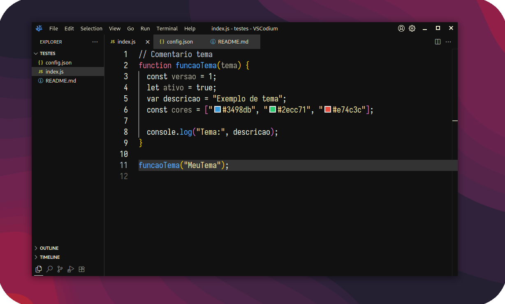

Tema escuro para VS Code / VS Codium + Layout
 Download v0.0.2
1. Baixe o arquivo .vsix clicando no botão acima
2. Abra o VS Code
3. Pressione Ctrl+Shift+P (ou Cmd+Shift+P no Mac)
4. Digite "Extensions: Install from VSIX"
5. Selecione o arquivo baixado
6. Ative o tema: Ctrl+K Ctrl+T → "Jopestpe Tema"
1. Pressione Ctrl+Shift+P (ou Cmd+Shift+P no Mac)
2. Digite "Ativar Layout Jopestpe"
1. Pressione Ctrl+Shift+P (ou Cmd+Shift+P no Mac)
2. Digite "Desativar Layout Jopestpe"